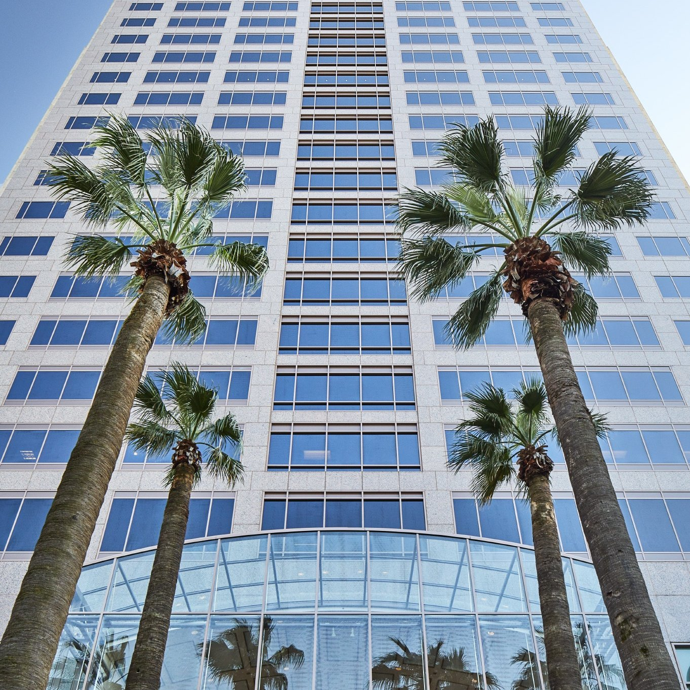

New Directions - Part 2

Hello! It’s been a while since I’ve given updates, and it’s due to some important career changes. As all of you know there was a global pandemic, and it caused me to reconsider my direction. My main thoughts on this are that I could succeed in photography, but It would take nearly a decade or more of hard work and long hours to get where I truly wanted to be: a successful world class advertising photographer working with large brands on creative projects that I enjoy, and for causes close to my heart. I wasn’t willing to sacrifice what that would take (work/life balance is important y’all!). After working in this field since starting my business in 2013, I’m moving towards a degree in computer science. The door is never closed to the right creative project, but in general I’ll be ceasing my commercial practice.
Now onto computer science. I had thought for about a couple years before the pandemic that the markets were too good for too long, and the world hadn't had the kind of shocks we’d seen in 2009. I expected the markets to crash, or something to happen for a while, and as soon as it did I was going to go back to school to try something new instead of wasting time by trying to succeed in an impacted field trying to recover. Unfortunately that moment came in 2020. At the time I was interested in a career in architecture, but again, 10 years, long hours, and little progress is a hard sacrifice. After watching some sci-fi shows (Devs, Westworld etc.) computer science caught my interest. I don’t want to create anything dystopian, don’t get me wrong, but technology is cool, and it has a lot of creative implications. It’s constantly moving, and changing. I wanted to be a part of it.
The summer of 2020 I spent weeks grinding in my typing skills, took an MITX class to learn python, and did research on what it would take to join the field. After internet searches ended up fruitless, and job descriptions I found locally all wanted a degree I flipped the switch and enrolled at Portland State University. I’ve been coding away ever since, and this last week I secured an internship in one of the fields close to my passions with a position at Trimble-Viewpoint as an intern. For the next six months I’ll be building and maintaining software for the construction and architecture industries, with another internship for a different company to follow. This is AWESOME! Anyways, I hope you enjoyed the update and I’ll continue to provide future insights (hopefully with more photos!).
Until next time,
Ryan